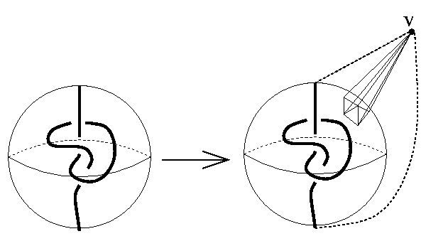

<HTML>
<HEAD>
<TITLE>3-Sphere with a 3-edged knot</TITLE></HEAD>

<BODY>
<H1>A 3-sphere with a knotted triangle</H1>

<DL>

<DD>
Lickorish (1991) showed the there are non-shellable
triangulations of a 3-sphere.
What he showed is the fact that if a triangulation of a 3-sphere
contain a knot made of 3 edges in the 1-skeleton, then it is
not shellable.
What he suggested to make such a triangulation is to use the
following construction.
<CENTER></CENTER>
First, we prepare the <A href="knot_eng.html">Furch's 3-ball</A>
with a knotted spanning arc consisting of one edge.
Then we take a cone over the boundary of the ball, then we have
a triangulated 3-sphere with a knot made of 3 edges.
<P>
The data given here is made from <A href="knot.html">knot.dat</A>
by one-point compactification. This has 381vertices and 1928 facets.
</DD>
<DT>Properties</DT>
<DD>
Lickorish's original theorem asserts that the triangulation is
non-shellable if the knot embedded is "complex enough",
but in fact, it is not shellable (even not constructible)
if the knot is nontrivial.
</DD>
<DT>Datum</DT>
<DD>
<A href="nc_sphere.dat">nc_sphere.dat</A>
</DD>
<DT>Table</DT>
<DD>
<TABLE BORDER>
<TR><TD>vertex decomposable?</TD><TD>no</TD></TR>
<TR><TD>extendably shellable?</TD><TD>no</TD></TR>
<TR><TD>shellable?</TD><TD>no</TD></TR>
<TR><TD>constructible?</TD><TD>no</TD></TR>
<TR><TD>Cohen-Macaulay?</TD><TD>yes</TD></TR>
<TR><TD>topology</TD><TD>3-sphere</TD></TR>
<TR><TD>f-vector</TD><TD>(1,381,2309,3856,1928)</TD></TR>
<TR><TD>h-vector</TD><TD>(1,377,1172,377,1)</TD></TR>
<TR><TD>made by</TD><TD>Lickorish ($B$^$?$O(Bfolklore)</TD></TR>
</TABLE>
</DD>

<DT>References</DT>
<DD>W.B.R.Lickorish,
    Unshellable triangulations of spheres,
    Europ. J. Cominatorics 12 (1991), 527-530.
<DD>M.Hachimori and G.M.Ziegler,
    Decompositions of balls and spheres with knots consisting of few edges,
    Math. Z., to appear.

</DL>


<HR>
<A HREF="index_eng.html">Return</A>

</BODY>
</HTML>


